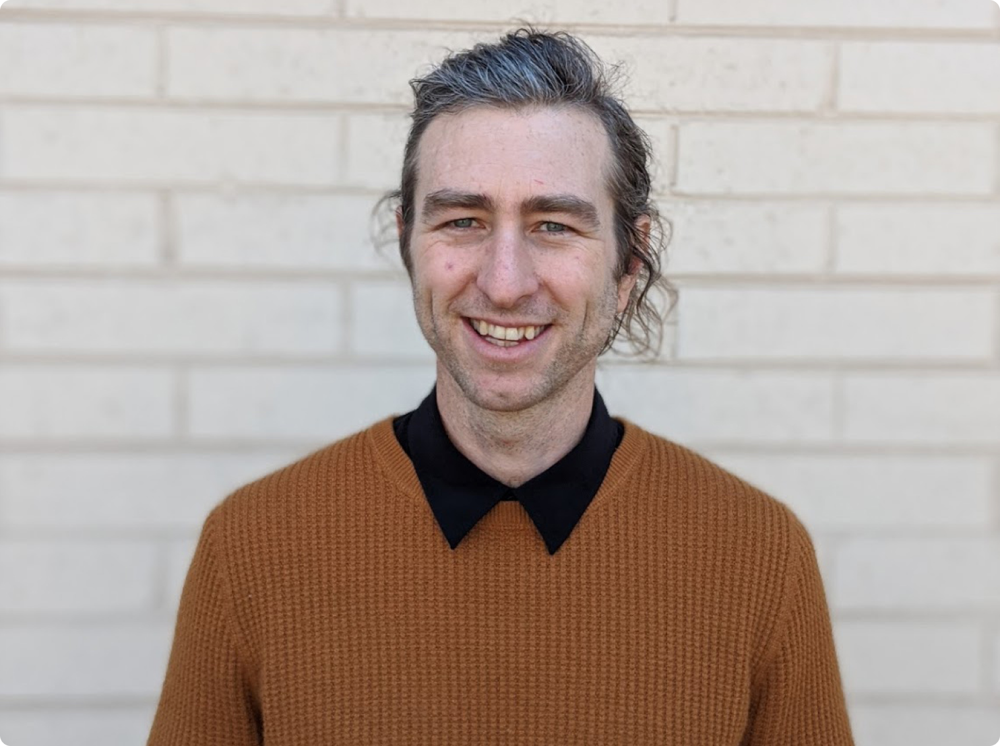

I’ve tried lots of things. I formed a band that created immersive live performances made to challenge the audience and invite them to join. I went to a bible college for a few semesters and helped build a satellite campus in Kauai, HI. I began studying pre-med and worked as a Nursing Assistant. I became a history major. I applied to a fermentation science program but did not attend, due to a major family illness. Back in my hometown, I took art classes and received my AFA at the local community college. While there, I fell in love with traditional printmaking processes, like intaglio. lithography, and relief printing. Printmaking allowed me to exercise creative visual expression, and abstract thinking, while working (often in reverse) through a system of technical processes. I took that love and got a BFA in printmaking from a great public program (and taking some great animation courses.) I began roasting coffee for a specialty coffee company. I attained personal goals but found one nagging issue in each area of study or employment: I was sure there was a better way to do things but didn’t always have the ability to explore those better ways.
I was sure there was a better way to do things but didn’t always have the ability to explore those better ways.”
While in my undergrad, I took art history classes with an emphasis on architecture. I explored a lot of illusion-of-3D space in my final undergrad work, and I felt like I wanted to dismiss the illusion and work in community space design. I began a Master of Architecture. Though I enjoyed everything, from free-body diagrams to parti creation, my favorite aspects were concept creation, visual design, and storytelling. In my third-semester studio critique, a reviewer remarked that though they wouldn’t have approached the project the way I did, I delighted them enough to see themself interacting with it. I then realized that I wanted to design the same experience for many more than the reviewer, or even those that might pass through a built-space.
<